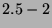
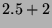

Next: .model TABLE: Fit a
Up: Behavioral modeling
Previous: SIN: Sinusoidal time dependent
Contents
Subsections
TANH gain limit
TANH args
Defines a hyperbolic tangent, or soft limiting, transfer function.
There is no corresponding capability in any SPICE that I know of, but
you can get close with POLY.
For capacitors, this function defines charge as a function of
voltage. For inductors, it defines flux as a function of
current.
For fixed sources, it defines voltage or current as a function of
time, which is probably not useful.
This function describes a hyperbolic tangent transfer function similar
to what you get with a single stage push-pull amplifier, or a simple
CMOS inverter acting as an amplifier.
- GAIN = x
- The small signal gain at 0 bias. (Required)
- LIMIT = x
- Maximum output value (soft clipping).
(Required)
- E1 2 0 1 0 tanh gain=-10 limit=2 ioffset=2.5 ooffset=2.5
- This gain block has a small signal gain of -10. The input is
centered around 2.5 volts. The output is also centered at 2.5 volts.
It ``clips'' softly at 2 volts above and below the output center, or
at .5 volts () and 4.5 volts ().
Next: .model TABLE: Fit a
Up: Behavioral modeling
Previous: SIN: Sinusoidal time dependent
Contents
Al Davis
2002-09-29